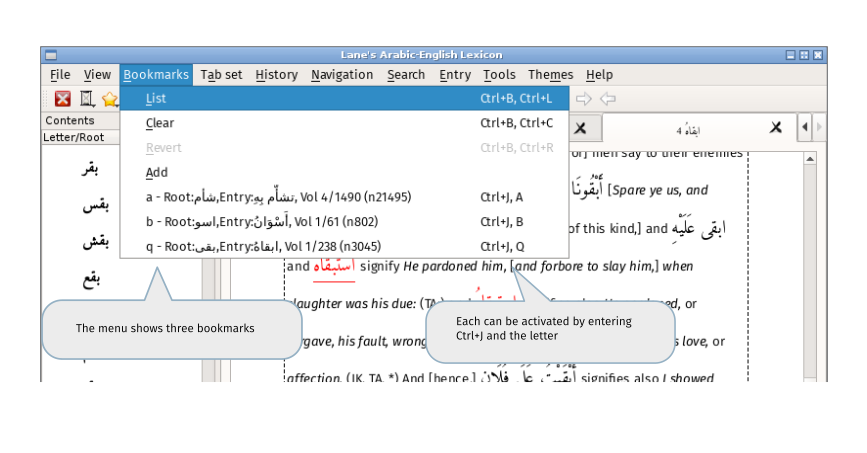

Individual entries within a page can be bookmarked for easy retrieval.
There are two types of bookmarks: single-letter marks and anything longer.
Single letter bookmarks can be retrieved by entering Ctrl+J and the letter or from the bookmark menu:

by clicking on the entry.
All bookmarks are listed in the bookmark dialog, activated by the default shortcut Ctrl+B,Ctrl+L or from the bookmark menu.
The up and down arrows move the current row. The current bookmark is activated by pressing spacebar or return ky or by using 'Show in tab' button.
Adding bookmarks
When an entry is selected i.e. a dashed rectangle surrounds the text, a bookmark can be added by:
- Ctrl+B and a single letter will add a bookmark using that letter.
- Ctrl+B,Ctrl-A will show a text entry box for single letter or longer bookmarks
- From the context menu
Once a single-letter bookmarks has been created, it will be added to the Bookmark menu.
If you have jumped to a bookmark and wish to return to the previous place, enter Ctrl-B,Ctrl-R. (This only preserves a single jump from position.)
Using uppercase letters as bookmarks
Entering uppercase bookmarks by simply typing Ctrl+B,A can be difficult because of timing issues. It is simpler in this case to add the bookmark either by right-clicking on the item or adding it via the main menu. Both methods will popup a small dialog allowing to the enter the uppercase character.
Editing bookmarks manually
Bookmarks are written to the current configuration file and so can be edited manually if required. The location of the current configuration file can be determined from the entries in System tab of the About dialog. (By combining the current working directory and configuration file entries.)